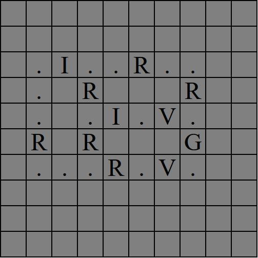
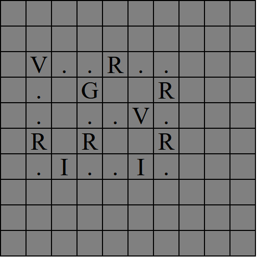
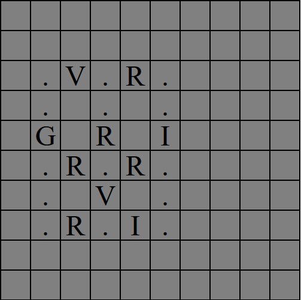

Circuit Analyzer Instructions
1. Wires are represented by dots, Resistors by R, Current Sources by I, Voltage Sources by V, and Ground by G.
2. Click on the tiles of the grid to cycle through the available components. Right-click to clear.
3. Every component other than wires must have exactly two connections, and they cannot be in corners.
4. There must be exactly one Ground node, and it must be adjacent to
all Voltage Sources. (No supernodes)
5. After generating the circuit, give a numerical value to every input field generated.
6. The direction of Current/Voltage Sources are predetermined. Enter a negative value if you want to inverse the direction.
Examples
Valid

Invalid (Voltage Source in corner)

Invalid (Ground is not adjacent to all voltage sources)
